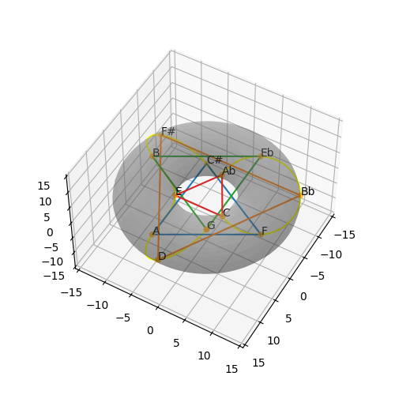

| A | Bb | B | C | C# | D | Eb | E | F | F# | G | Ab |

| A | B | C# | Eb | F | G |
| Bb | C | D | E | F# | Ab |

| A | C | Eb | F# |
| Bb | C# | E | G |
| B | D | F | Ab |

| A | C# | F |
| Bb | D | F# |
| B | Eb | G |
| C | E | Ab |

| A | D | G | C | F | Bb | Eb | Ab | C# | F# | B | E |

| A | Eb |
| Bb | E |
| B | F |
| C | F# |
| C# | G |
| D | Ab |

| Interval | Cycle | Circle of fifths | Torus Projection | ||||||||||||
|---|---|---|---|---|---|---|---|---|---|---|---|---|---|---|---|
| 1 / 11 |
|
|
|||||||||||||
| 2 / 10 |
|
|
|||||||||||||
| 3 / 9 |
|
|
|||||||||||||
| 4 / 8 |
|
|
 | ||||||||||||
| 5 / 7 |
|
|
|||||||||||||
| 6 |
|
|
© David Fraser 2013